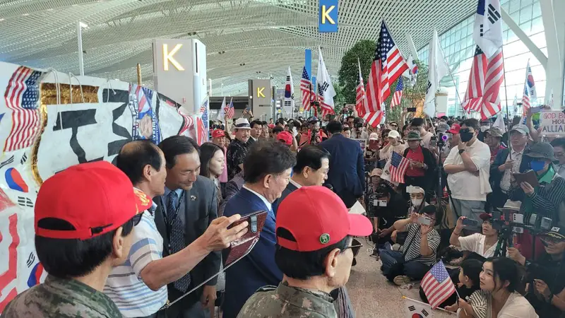
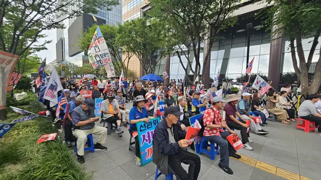

단체 소개
트루스코리아(TRUTHKOREA)의 비전선언문입니다.
TRUTH KOREA 트루스코리아
비전선언문
자유대한민국을 위한 우리의 약속
우리의 사명과 방향
-
건전한 애국단체 지원
자유민주주의 수호를 위해 헌신하는 보수·우파 애국운동 단체를 적극적으로 지원합니다.
-
문화·
예술· 교육단체 지원 영화, 연극, 문학, 전시회, 음악회, 뮤지컬, 국제행사 등 대한민국의 정체성을 지키는 활동을 후원합니다.
-
청년·
대학 애국아카데미 지원 바른 역사교육, 시민 아카데미, 문학·토론 클럽, 청년·NGO 조직 등 청년들이 진리와 자유를 배우고 실천할 수 있는 터전을 만듭니다.

“대한민국은 민주공화국이며 주권은 국민에게 있고 모든 권력은 국민으로부터 나온다!”
우리의 지속 가능한 목적
-
자유민주주의의 수호
우리의 자녀들이 훗날 말할 수 있도록 합니다:
“우리 부모 세대는 조국이 공산화 직전에 처했을 때 단결된 애국심과 사명감으로 자유민주주의를 지켜냈다.” -
역사 앞에서의 증언
우리는 후손들과 역사 앞에서 증언할 것입니다:
“우리는 왜, 그리고 어떻게 자유대한민국을 지키기 위해 싸웠는가.” -
애국운동의 계승
일제강점기 독립운동, 금 모으기 운동, 물산장려운동… 역사 속 수많은 애국운동이 국민의 피와 땀, 그리고 후원으로 이루어졌음을 기억하며, 그 정신을 이어 국가적 위기를 함께 이겨냅니다.
우리의 인생 핵심가치
-
재산의 공유
나의 재산은 나만의 것이 아닙니다. 3/3/3 원칙으로 나눕니다: 30%는 자녀에게, 30%는 사회에, 10%는 종교단체에 헌금합니다.
-
조국을 위한 헌신
자유대한민국을 바로 세우는 애국시민단체를 위해 나의 재산과 물질을 정성껏 드립니다. 이는 조국에 바치는 마지막 헌신입니다.
-
사전 분배와 신앙
건강할 때부터 수익 일부를 3/3/3 원칙으로 나누며, 이를 유언장에 기록하고, 하나님께 서약합니다.
